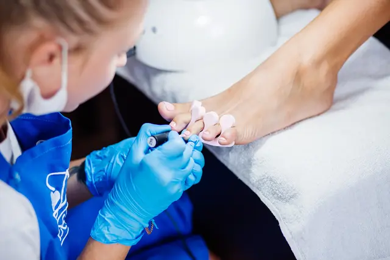

¿Qué son las Verrugas Plantares y por qué Aparecen?
Las verrugas plantares son lesiones de la piel causadas por el virus del papiloma humano (VPH), que entra por grietas o heridas pequeñas en la planta del pie, suelen salir en zonas de apoyo como el talón o la parte delantera y, como el peso del cuerpo las empuja hacia dentro, pueden doler al caminar o estar de pie; a diferencia del callo, cortan las líneas naturales de la piel y muchas veces tienen puntitos oscuros en la superficie.
En Podóloga Aurora, en Pachuca, Hidalgo, tratamos la verruga plantar como un tema de salud que pide atención profesional y sobre todo prevención, así que nuestro objetivo va más allá de quitarla: diagnosticarla bien, retirarla de forma segura y darte las pautas para que el VPH no vuelva a salir ni pase a otras zonas o personas.
¿Sabías esto? El VPH de las verrugas plantares se contagia fácil en lugares húmedos como albercas, regaderas públicas, gimnasios y vestidores, y andar descalzo ahí o compartir toallas y calzado son las formas de contagio más comunes, por eso prevenir importa tanto como tratar la lesión que ya tienes.

¿Cómo Identificar una Verruga Plantar?
Conviene saber distinguir una verruga plantar de un callo común, porque se tratan distinto, y estas son algunas señales de alerta:
- Lesión rugosa y engrosada en la planta del pie, a veces con apariencia de coliflor
- Pequeños puntos negros en el centro (capilares sanguíneos coagulados)
- Dolor o sensibilidad al caminar, estar de pie o al presionar los lados de la lesión
- Interrupción de las líneas y huellas naturales de la piel sobre la verruga
- Aparición de varias verrugas agrupadas o dispersas en el mismo pie
- Crecimiento que persiste o reaparece después de intentos caseros de eliminarla
¿En Qué Consiste el Tratamiento en Podóloga Aurora?
Valoramos cada caso por separado para elegir la técnica que mejor se ajusta al tamaño, la profundidad y la cantidad de lesiones, y el tratamiento puede incluir:
- Valoración y diagnóstico diferencial para confirmar que se trata de una verruga por VPH y no de un callo
- Deslaminado profesional de la lesión con instrumental estéril para delimitarla con precisión
- Aplicación de tratamientos queratolíticos o cauterizantes de uso podológico, según el caso
- Indicaciones de cuidado en casa para potenciar la eliminación de la lesión
- Citas de seguimiento para vigilar la evolución y evitar que la verruga reaparezca
- Plan preventivo personalizado para reducir el riesgo de contagio y recaídas
Prevención: La Clave para Evitar las Verrugas Plantares
Como el VPH se contagia fácil, la prevención es una parte central de nuestro trabajo, y estas medidas bajan mucho el riesgo:
- Usa sandalias o calzado de baño en albercas, regaderas, gimnasios y vestidores públicos
- Mantén los pies limpios y bien secos, sobre todo entre los dedos
- No compartas toallas, calcetines ni calzado con otras personas
- No intentes cortar o quemar la verruga por tu cuenta, ya que puedes propagarla o infectarla
- Revisa periódicamente la planta de tus pies y los de tu familia, especialmente en niños
- Acude con un profesional ante cualquier lesión nueva o que cambie de aspecto
Atendemos en Pachuca, Hidalgo: también recibimos a pacientes de Real del Monte, Mineral de la Reforma, Actopan, Tulancingo y otras localidades cercanas, y puedes agendar de lunes a domingo de 8:00 a.m. a 6:00 p.m., sin esperas y con atención puntual.